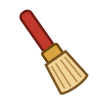

사비 백제로 떠나는 시간 여행!
테이블 가장자리마다 한 명씩 서서 함께 하나의 유적을 발굴해요.
넓은 곳의 겉흙을 빠르게 걷어 내요. 유물 가까이에서 쓰면 조사 점수가 줄어요.

2. 발굴 붓유물 주변의 흙을 부드럽게 털어 내요. 유물의 모양이 드러나요.
유물 위의 고운 먼지를 털어 내요. 숨은 문양과 글자를 찾을 수 있어요.
드러난 유물을 눌러 사진을 찍고 출토 위치를 발굴 수첩에 기록해요.
⭐ 빨리 파는 것보다 조심스럽게, 꼼꼼하게, 함께 발굴하면 별을 더 많이 받아요!
화면을 다시 불러오면 이어서 할 수 있어요.